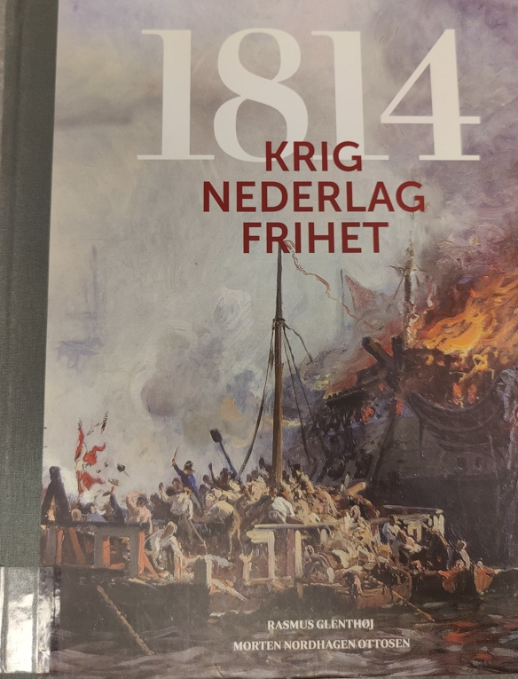

Krig 1814
Om boka
Krigsårene frem mot 1814 inneholder noen av de mest dramatiske
begivenhetene i både dansk og norsk historie. I denne boken finner
du for første gang en samlet fremstilling av krigsårene mellom 1807
og 1814 fra et felles dansk-norsk perspektiv.
1814 var det moderne
Norges fødsel. Norge ble selvstendig med en av Europas mest liberale
grunnlover, og både selvstendigheten og grunnloven fikk leve
selv om Norge mot slutten av året ble forent med Sverige i en løs union.
Politisk sett gjorde dette Norge til en av Napoleonskrigenes vinnere, men "
"mirakelåret".